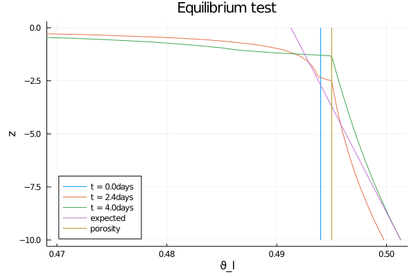

Hydrostatic Equilibrium test for Richards Equation
This tutorial shows how to use ClimateMachine code to solve Richards equation in a column of soil. We choose boundary conditions of zero flux at the top and bottom of the column, and then run the simulation long enough to see that the system is approaching hydrostatic equilibrium, where the gradient of the pressure head is equal and opposite the gradient of the gravitational head. Note that the SoilWaterModel includes a prognostic equation for the volumetric ice fraction, as ice is a form of water that must be accounted for to ensure water mass conservation. If freezing and thawing are not turned on (the default), the amount of ice in the model is zero for all space and time (again by default).
The equations are:
$\frac{ ∂ ϑ_l}{∂ t} = ∇ ⋅ K (T, ϑ_l, θ_i; ν, ...) ∇h( ϑ_l, z; ν, ...).$
$\frac{ ∂ θ_i}{∂ t} = 0$
Here
$t$ is the time (s),
$z$ is the location in the vertical (m),
$T$ is the temperature of the soil (K),
$K$ is the hydraulic conductivity (m/s),
$h$ is the hydraulic head (m),
$ϑ_l$ is the augmented volumetric liquid water fraction,
$θ_i$ is the volumetric ice fraction, and
$ν, ...$ denotes parameters relating to soil type, such as porosity.
We will solve this equation in an effectively 1-d domain with $z ∈ [-10,0]$, and with the following boundary and initial conditions:
$- K ∇h(t, z = 0) = 0 ẑ$
$-K ∇h(t, z = -10) = 0 ẑ$
$ϑ(t = 0, z) = ν-0.001$
$θ_i(t = 0, z) = 0.0.$
where $\nu$ is the porosity.
A word about the hydraulic conductivity: please see the hydraulic functions tutorial for options regarding this function. The user can choose to make it depend on the temperature and the amount of ice in the soil; the default, which we use here, is that K only depends on the liquid moisture content.
Lastly, our formulation of this equation allows for a continuous solution in both saturated and unsaturated areas, following [1].
Preliminary setup
- Load external packages
using MPI
using OrderedCollections
using StaticArrays
using Statistics- Load CLIMAParameters and ClimateMachine modules
using CLIMAParameters
struct EarthParameterSet <: AbstractEarthParameterSet end
const param_set = EarthParameterSet()
using ClimateMachine
using ClimateMachine.Land
using ClimateMachine.Land.SoilWaterParameterizations
using ClimateMachine.Mesh.Topologies
using ClimateMachine.Mesh.Grids
using ClimateMachine.DGMethods
using ClimateMachine.DGMethods.NumericalFluxes
using ClimateMachine.DGMethods: BalanceLaw, LocalGeometry
using ClimateMachine.MPIStateArrays
using ClimateMachine.GenericCallbacks
using ClimateMachine.ODESolvers
using ClimateMachine.VariableTemplates
using ClimateMachine.SingleStackUtils
using ClimateMachine.BalanceLaws:
BalanceLaw, Prognostic, Auxiliary, Gradient, GradientFlux, vars_state- Define the float type desired (
Float64orFloat32)
const FT = Float64;- Initialize ClimateMachine for CPU
ClimateMachine.init(; disable_gpu = true);Load plot helpers:
const clima_dir = dirname(dirname(pathof(ClimateMachine)));
include(joinpath(clima_dir, "docs", "plothelpers.jl"));Set up the soil model
We want to solve Richards equation alone, without simultaneously solving the heat equation. Because of that, we choose a PrescribedTemperatureModel. The user can supply a function for temperature, depending on time and space; if this option is desired, one could also choose to model the temperature dependence of viscosity, or to drive a freeze/thaw cycle, for example. If the user simply wants to model Richards equation for liquid water, the defaults will allow for that. Here we ignore the effects of temperature and freezing and thawing, using the defaults.
soil_heat_model = PrescribedTemperatureModel();Define the porosity, Ksat, and specific storage values for the soil. Note that all values must be given in mks units. The soil parameters chosen roughly correspond to Yolo light clay.
soil_param_functions = SoilParamFunctions{FT}(
porosity = 0.495,
Ksat = 0.0443 / (3600 * 100),
S_s = 1e-3,
);Define the boundary conditions. The user can specify two conditions, either at the top or at the bottom, and they can either be Dirichlet (on ϑ_l) or Neumann (on -K∇h). Note that fluxes are supplied as scalars, inside the code they are multiplied by ẑ. The two conditions not supplied must be set to nothing.
surface_flux = (aux, t) -> eltype(aux)(0.0)
bottom_flux = (aux, t) -> eltype(aux)(0.0)
surface_state = nothing
bottom_state = nothing
bc = GeneralBoundaryConditions(
Dirichlet(surface_state = surface_state, bottom_state = bottom_state),
Neumann(surface_flux = surface_flux, bottom_flux = bottom_flux),
)ClimateMachine.Land.GeneralBoundaryConditions{ClimateMachine.Land.Dirichlet{Nothing,Nothing},ClimateMachine.Land.Neumann{Main.ex-equilibrium_test.var"#11#12",Main.ex-equilibrium_test.var"#13#14"}}(ClimateMachine.Land.Dirichlet{Nothing,Nothing}(nothing, nothing), ClimateMachine.Land.Neumann{Main.ex-equilibrium_test.var"#11#12",Main.ex-equilibrium_test.var"#13#14"}(Main.ex-equilibrium_test.var"#11#12"(), Main.ex-equilibrium_test.var"#13#14"()))Define the initial state function. The default for θ_i is zero.
ϑ_l0 = (aux) -> eltype(aux)(0.494);Create the SoilWaterModel. The defaults are a temperature independent viscosity, and no impedance factor due to ice. We choose to make the hydraulic conductivity a function of the moisture content ϑ_l, and employ the vanGenuchten hydraulic model with n = 2.0. The van Genuchten parameter m is calculated from n, and we use the default value for α.
soil_water_model = SoilWaterModel(
FT;
moisture_factor = MoistureDependent{FT}(),
hydraulics = vanGenuchten{FT}(n = 2.0),
initialϑ_l = ϑ_l0,
boundaries = bc,
);Create the soil model - the coupled soil water and soil heat models.
m_soil = SoilModel(soil_param_functions, soil_water_model, soil_heat_model);We are ignoring sources and sinks here, like runoff or freezing and thawing.
sources = ();Define the function that initializes the prognostic variables. This in turn calls the functions supplied to soil_water_model.
function init_soil_water!(land, state, aux, localgeo, time)
state.soil.water.ϑ_l = eltype(state)(land.soil.water.initialϑ_l(aux))
state.soil.water.θ_i = eltype(state)(land.soil.water.initialθ_i(aux))
endinit_soil_water! (generic function with 1 method)
Create the land model - in this tutorial, it only includes the soil.
m = LandModel(
param_set,
m_soil;
source = sources,
init_state_prognostic = init_soil_water!,
);Specify the numerical configuration and output data.
Specify the polynomial order and vertical resolution.
N_poly = 5;
nelem_vert = 20;Specify the domain boundaries.
zmax = FT(0);
zmin = FT(-10);Create the driver configuration.
driver_config = ClimateMachine.SingleStackConfiguration(
"LandModel",
N_poly,
nelem_vert,
zmax,
param_set,
m;
zmin = zmin,
numerical_flux_first_order = CentralNumericalFluxFirstOrder(),
);┌ Info: Model composition
│ param_set = Main.ex-equilibrium_test.EarthParameterSet()
│ soil = ClimateMachine.Land.SoilModel{ClimateMachine.Land.SoilParamFunctions{Float64},ClimateMachine.Land.SoilWaterModel{Float64,ClimateMachine.Land.SoilWaterParameterizations.NoImpedance{Float64},ClimateMachine.Land.SoilWaterParameterizations.ConstantViscosity{Float64},ClimateMachine.Land.SoilWaterParameterizations.MoistureDependent{Float64},ClimateMachine.Land.SoilWaterParameterizations.vanGenuchten{Float64},Main.ex-equilibrium_test.var"#15#16",ClimateMachine.Land.var"#23#27",ClimateMachine.Land.GeneralBoundaryConditions{ClimateMachine.Land.Dirichlet{Nothing,Nothing},ClimateMachine.Land.Neumann{Main.ex-equilibrium_test.var"#11#12",Main.ex-equilibrium_test.var"#13#14"}}},ClimateMachine.Land.PrescribedTemperatureModel{ClimateMachine.Land.var"#28#29"}}(ClimateMachine.Land.SoilParamFunctions{Float64}(0.495, 1.2305555555555556e-7, 0.001, NaN, NaN, NaN, NaN, NaN, NaN, NaN, NaN, 0.24, 18.1, 0.053), ClimateMachine.Land.SoilWaterModel{Float64,ClimateMachine.Land.SoilWaterParameterizations.NoImpedance{Float64},ClimateMachine.Land.SoilWaterParameterizations.ConstantViscosity{Float64},ClimateMachine.Land.SoilWaterParameterizations.MoistureDependent{Float64},ClimateMachine.Land.SoilWaterParameterizations.vanGenuchten{Float64},Main.ex-equilibrium_test.var"#15#16",ClimateMachine.Land.var"#23#27",ClimateMachine.Land.GeneralBoundaryConditions{ClimateMachine.Land.Dirichlet{Nothing,Nothing},ClimateMachine.Land.Neumann{Main.ex-equilibrium_test.var"#11#12",Main.ex-equilibrium_test.var"#13#14"}}}(ClimateMachine.Land.SoilWaterParameterizations.NoImpedance{Float64}(), ClimateMachine.Land.SoilWaterParameterizations.ConstantViscosity{Float64}(), ClimateMachine.Land.SoilWaterParameterizations.MoistureDependent{Float64}(), ClimateMachine.Land.SoilWaterParameterizations.vanGenuchten{Float64}(2.0, 2.6, 0.5), Main.ex-equilibrium_test.var"#15#16"(), ClimateMachine.Land.var"#23#27"(), ClimateMachine.Land.GeneralBoundaryConditions{ClimateMachine.Land.Dirichlet{Nothing,Nothing},ClimateMachine.Land.Neumann{Main.ex-equilibrium_test.var"#11#12",Main.ex-equilibrium_test.var"#13#14"}}(ClimateMachine.Land.Dirichlet{Nothing,Nothing}(nothing, nothing), ClimateMachine.Land.Neumann{Main.ex-equilibrium_test.var"#11#12",Main.ex-equilibrium_test.var"#13#14"}(Main.ex-equilibrium_test.var"#11#12"(), Main.ex-equilibrium_test.var"#13#14"()))), ClimateMachine.Land.PrescribedTemperatureModel{ClimateMachine.Land.var"#28#29"}(ClimateMachine.Land.var"#28#29"()))
│ source = ()
└ init_state_prognostic = init_soil_water!
┌ Info: Defining `prognostic_vars` and
│ `eq_tends` for LandModel will
└ enable printing a table of tendencies.
┌ Info: Establishing single stack configuration for LandModel
│ precision = Float64
│ horiz polynomial order = 5
│ vert polynomial order = 5
│ domain_min = 0.00 m x0.00 m x-10.00 m
│ domain_max = 1.00 m x1.00 m x0.00 m
│ # vert elems = 20
│ MPI ranks = 1
│ min(Δ_horz) = 0.12 m
└ min(Δ_vert) = 0.06 mChoose the initial and final times, as well as a timestep.
t0 = FT(0)
timeend = FT(60 * 60 * 24 * 4)
dt = FT(5);Create the solver configuration.
solver_config =
ClimateMachine.SolverConfiguration(t0, timeend, driver_config, ode_dt = dt);[ Info: Initializing LandModel
Determine how often you want output.
const n_outputs = 5;
const every_x_simulation_time = ceil(Int, timeend / n_outputs);Create a place to store this output.
state_types = (Prognostic(), Auxiliary(), GradientFlux())
dons_arr = Dict[dict_of_nodal_states(solver_config, state_types; interp = true)]
time_data = FT[0] # store time data
callback = GenericCallbacks.EveryXSimulationTime(every_x_simulation_time) do
dons = dict_of_nodal_states(solver_config, state_types; interp = true)
push!(dons_arr, dons)
push!(time_data, gettime(solver_config.solver))
nothing
end;Run the integration
ClimateMachine.invoke!(solver_config; user_callbacks = (callback,));┌ Info: Starting LandModel │ dt = 5.00000e+00 │ timeend = 345600.00 │ number of steps = 69120 └ norm(Q) = 1.5621651641231775e+00 ┌ Info: Update │ simtime = 12575.00 / 345600.00 │ wallclock = 00:01:00 │ efficiency (simtime / wallclock) = 208.5579 │ wallclock end (estimated) = 00:27:37 └ norm(Q) = 1.5621697536822572e+00 ┌ Info: Update │ simtime = 29660.00 / 345600.00 │ wallclock = 00:01:59 │ efficiency (simtime / wallclock) = 247.1728 │ wallclock end (estimated) = 00:23:18 └ norm(Q) = 1.5621815621853898e+00 ┌ Info: Update │ simtime = 47480.00 / 345600.00 │ wallclock = 00:03:00 │ efficiency (simtime / wallclock) = 263.7646 │ wallclock end (estimated) = 00:21:50 └ norm(Q) = 1.5621981324943215e+00 ┌ Info: Update │ simtime = 65745.00 / 345600.00 │ wallclock = 00:04:00 │ efficiency (simtime / wallclock) = 273.9238 │ wallclock end (estimated) = 00:21:01 └ norm(Q) = 1.5622184330683662e+00 ┌ Info: Update │ simtime = 85960.00 / 345600.00 │ wallclock = 00:05:00 │ efficiency (simtime / wallclock) = 286.5133 │ wallclock end (estimated) = 00:20:06 └ norm(Q) = 1.5622440040859016e+00 ┌ Info: Update │ simtime = 107730.00 / 345600.00 │ wallclock = 00:06:00 │ efficiency (simtime / wallclock) = 299.2292 │ wallclock end (estimated) = 00:19:14 └ norm(Q) = 1.5622745475067101e+00 ┌ Info: Update │ simtime = 131640.00 / 345600.00 │ wallclock = 00:07:00 │ efficiency (simtime / wallclock) = 313.4054 │ wallclock end (estimated) = 00:18:22 └ norm(Q) = 1.5623111029110961e+00 ┌ Info: Update │ simtime = 158200.00 / 345600.00 │ wallclock = 00:08:00 │ efficiency (simtime / wallclock) = 329.5559 │ wallclock end (estimated) = 00:17:28 └ norm(Q) = 1.5623548550213811e+00 ┌ Info: Update │ simtime = 188630.00 / 345600.00 │ wallclock = 00:09:00 │ efficiency (simtime / wallclock) = 349.2851 │ wallclock end (estimated) = 00:16:29 └ norm(Q) = 1.5624084523113224e+00 ┌ Info: Update │ simtime = 223365.00 / 345600.00 │ wallclock = 00:10:00 │ efficiency (simtime / wallclock) = 372.2446 │ wallclock end (estimated) = 00:15:28 └ norm(Q) = 1.5624733872153762e+00 ┌ Info: Update │ simtime = 262880.00 / 345600.00 │ wallclock = 00:11:00 │ efficiency (simtime / wallclock) = 398.2717 │ wallclock end (estimated) = 00:14:27 └ norm(Q) = 1.5625508398164085e+00 ┌ Info: Update │ simtime = 304995.00 / 345600.00 │ wallclock = 00:12:00 │ efficiency (simtime / wallclock) = 423.5706 │ wallclock end (estimated) = 00:13:35 └ norm(Q) = 1.5626360870156208e+00 ┌ Info: Finished │ norm(Q) = 1.5627196524958247e+00 │ norm(Q) / norm(Q₀) = 1.0003549486221954e+00 └ norm(Q) - norm(Q₀) = 5.5448837264715500e-04
Get the final state and create plots:
dons = dict_of_nodal_states(solver_config, state_types; interp = true)
push!(dons_arr, dons)
push!(time_data, gettime(solver_config.solver));Get z-coordinate
z = get_z(solver_config.dg.grid; rm_dupes = true);Create some plots
We'll plot the moisture content vs depth in the soil, as well as the expected slope of ϑ_l in hydrostatic equilibrium when the soil is saturated. For ϑ_l values above porosity, the soil is saturated, and the pressure head changes from being equal to the matric potential to the pressure generated by compression of water and the soil matrix. The pressure head is continuous at porosity, but the derivative is not.
slope = -1e-3
output_dir = @__DIR__;
t = time_data ./ (60 * 60 * 24);
plot(
dons_arr[1]["soil.water.ϑ_l"],
dons_arr[1]["z"],
label = string("t = ", string(t[1]), "days"),
xlim = [0.47, 0.501],
ylabel = "z",
xlabel = "ϑ_l",
legend = :bottomleft,
title = "Equilibrium test",
);
plot!(
dons_arr[4]["soil.water.ϑ_l"],
dons_arr[4]["z"],
label = string("t = ", string(t[4]), "days"),
);
plot!(
dons_arr[6]["soil.water.ϑ_l"],
dons_arr[6]["z"],
label = string("t = ", string(t[6]), "days"),
);
plot!(
(dons_arr[1]["z"] .+ 10.0) .* slope .+ dons_arr[6]["soil.water.ϑ_l"][1],
dons_arr[1]["z"],
label = "expected",
);
plot!(
1e-3 .+ dons_arr[1]["soil.water.ϑ_l"],
dons_arr[1]["z"],
label = "porosity",
);save the output.
savefig(joinpath(output_dir, "equilibrium_test_ϑ_l_vG.png"))
References
[1] Woodward, C. S., and C. N. Dawson (2000), Analysis of expanded mixed finite element methods for a nonlinear parabolic equation modeling flow into variably saturated porous media, SIAM J. Numer. Anal., 37, 701–724
This page was generated using Literate.jl.